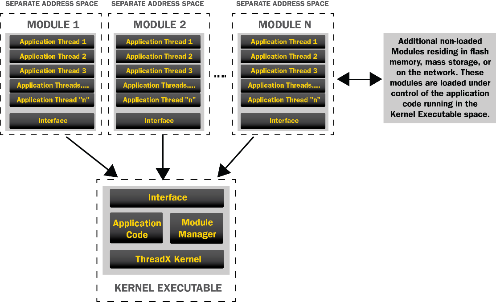

Chapter 1: Overview
The ThreadX Module component provides an infrastructure for applications to dynamically load modules that are built separately from the resident portion of the application. This is especially useful in situations where the application code size exceeds available memory. It can also help when new features are required to be added after the core image is deployed. In addition, dynamically loading modules can be used when partial firmware updates are required.
Memory protection for the loaded module is optional, based on the properties specified in the module preamble. When memory protection is specified, the processor’s memory management hardware is configured such that all threads of the module are only allowed access to the module’s code and data memory. Any extraneous memory access or execution will result in a memory fault and the offending module thread will be terminated. If the application registers a memory fault notification callback, this will also be called to alert the application of the memory fault. Note, threads that exist within the same module will share resources with one another. This means that multiple threads within a single module can access the same memory and other resources without interference from memory protection mechanisms.
The ThreadX Module component relies on the application to provide a memory area where modules can be loaded. The instruction area of each module may execute in place or be copied into the RAM module memory area for execution. In all cases, the module data memory requirements are allocated from the module memory area.
There are no limits on the number of modules that can be loaded at the same time (aside from the amount of memory available), while there is only one copy of the resident Module Manager code. Figure 1 illustrates the relationship of the Module Manager and the modules themselves.

Figure 1 Modules and Module Manager
Each module must have its own memory area, which is the application’s responsibility to define. The Module and the Module Manager interact through a software dispatch function via pre-defined request IDs that correspond to ThreadX services requested by the module. In addition, the module is required to provide a single thread entry point as well as the required stack size, priority, module ID, callback thread stack size/priority, etc. This information is defined in each module’s preamble.
The Module Manager is responsible for creating the initial module thread and initiating its execution. Once the module’s initial thread is executing, the Module Manager is responsible for fielding all ThreadX API requests made by the module. A module has full access to the ThreadX API, including the ability to create additional threads within the module.
The module source code naming conventions are straightforward: all Module Manager source files are named txm_module_manager* and all files associated exclusively with the module omit the "_manager" portion of the name. The main include file txm_module.h is shared by the manager and module source code.